The endless end
Finito il manico ho pensato “ok, ci siamo, un mesetto o due ed è finita”, e invece ci sono voluti altri 7 mesi!

Non sono in grado di creare suspense, quindi partirei dalla fine. Eccola qua:
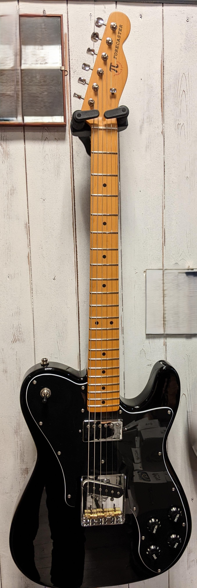
Il logo voleva essere un ricordo autoreferenziale e molto poco artistico, nella convinzione che non puoi costruire una chitarra senza apporre uno stemma della casa produttrice, insomma volevo qualcosa su quella paletta. Inizialmente avevo detto che l’avrei chiamata “anti-caster”, ma, nonostante i numerosi errori mi sembrava eccessivamente punitivo nei miei confronti. Con “forecaster” ho mantenuto un buon grado di autoironia, visto che, come spesso capita con le previsioni idro/meteo, ho cannato i tempi necessari alla costruzione, ma al tempo stesso questa parola proietta l’orizzonte verso il futuro, mi ricorda che la fine è un nuovo punto di partenza.
Ci sarebbe da descrivere tutto il lavoro dedicato alla verniciatura e alla finitura a specchio, ma, dato che queste lavorazioni sono state fatte per la maggior parte dal maestro liutaio, e che, necessariamente, richiedono un approfondimento spcifico, non parlerò qui della verniciatura. La prendiamo magicamente per fatta con uno schiocco di dita 👉.
Giunzione di manico e corpo (post-verniciatura)
La verniciatura lascia dei residui nella zona di contorno della tasca del manico nelle piccole cavità che si formano tra la faccia superiore e la zona della tasca, che viene mascherata con scotch carta prima della verniciatura in modo la tasca non venga coperta dalla vernice. Questi residui restringono l’ingombro effettivo della tasca, per cui bisogna riportarla alle dimensioni giuste, in modo che il manico calzi perfettamente.
Per fare questo si avvolge della carta 320 ad un bastoncino di legno piatto, della dimensione dello stecco di un gelato. Bisogna fare molta attenzione a non abradere la superficie superiore, lavorare sempre paralleli ai piani della tasca.
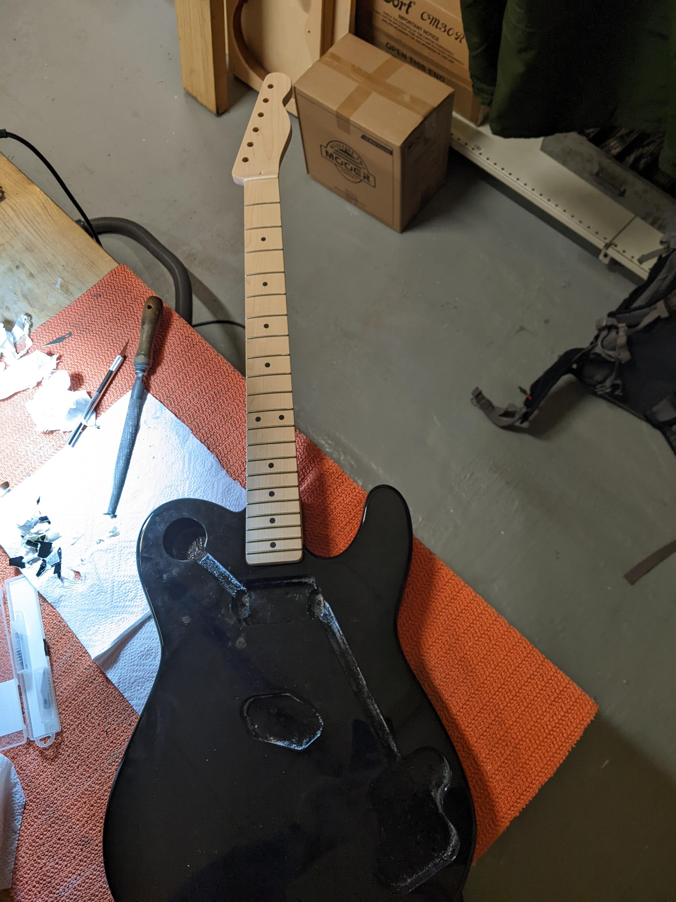
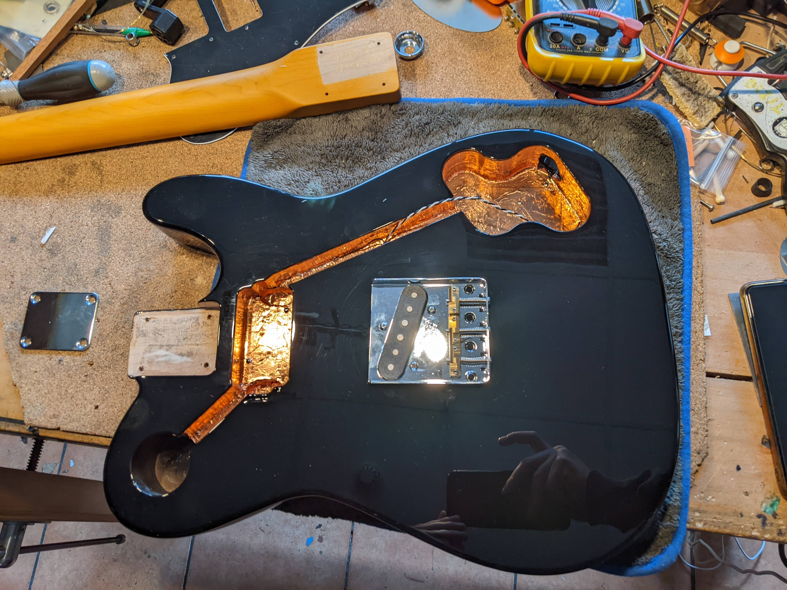
Una volta che il manico entra alla perfezione nella tasca, e sistemato nella sua sede, utilizzando una delle viti per la giunzione del corpo con il manico, si fa in modo da marcare con la punta della vite la posizione del preforo da praticare. Il diametro del foro è in funzione della vite, 3 mm dovrebbe andare bene. Preforato il manico, aiutandosi con un morsetto al giunto corpo/manico, si avvitano le 4 viti posteriori.
Costruzione dei pick-up e del battipenna
I pickup sono stati interamente autocostruiti. Marco, il maestro liutaio, ha sviluppato e ingegnerizzato diverse linee di pickup, nel mio caso ho scelto un hambucker al manico e un single coil al ponte, come per il modello Fender Vintera ’70 Custom a cui mi sono ispirato. Anche qui ci sarebbe molto da dire, ma come per la verniciatura, è stato fatto tutto da Marco, per cui non mi soffermo nei dettagli costruttivi.
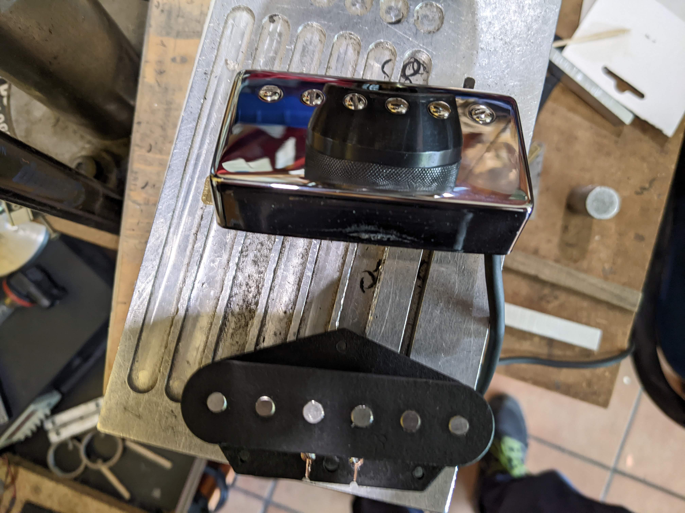
Il battipenna è stato lavorato alla CNC. Da un foglio di laminato di ABS. Si procede prima alla creazione dei fori, poi al taglio della sagoma e infine allo smusso del contorno a 45°, facendo attenzione a non smussare i tratti di curva a contatto con il manico, con il ponte e con i pickup. Completata questa operazione, è possibile che la lavorazione alla CNC lasci delle bavette di materiale plastico che possono essere rimosse rapidamente con una rasiera.
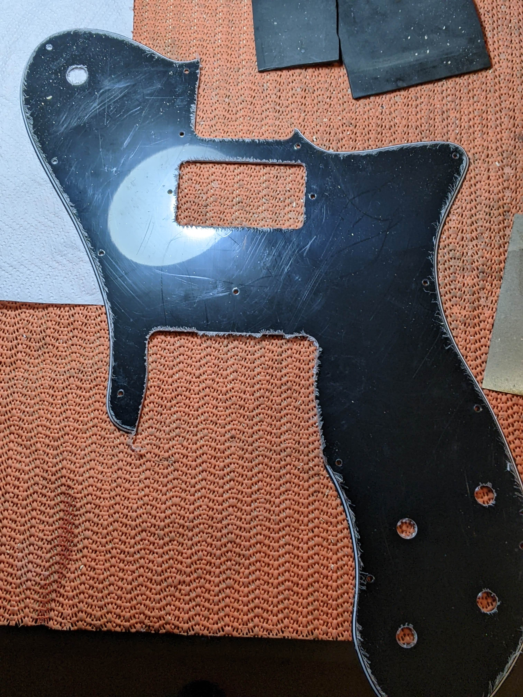
Rettifica, coronatura e lucidatura dei tasti
Una delle fasi più belle di tutta la costruzione. Una volta verniciato il manico, si procede alla mascheratura lasciando solo i tasti scoperti. Fare attenzione allo scotch carta, si preferisca uno scotch poco incollante, perché potrebbe staccarsi la finitura.
La fase di pulizia dei tasti viene fatta con carta P1000. Non è un problema se rimane della vernice alla base del tasto.
A questo punto si passa alla rettifica (livellamento) dei tasti utilizzando una katana o un profilato metallico di spessore adeguato e dritto. La rettifica si fa utilizzando una grana piuttosto aggressiva P240 con carta di alta qualità (Eagle abrasives).
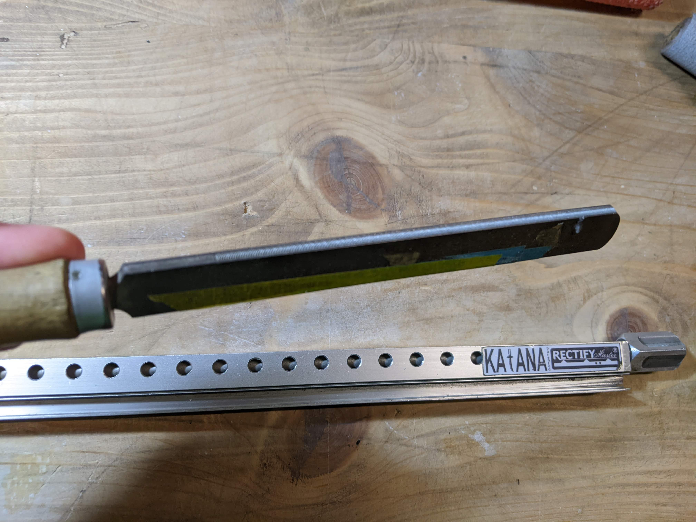
Quando si fa la rettifica è importante seguire la curvatura radiale del manico, che geometricamente è assimilabile ad un tronco di cono. Si parte paralleli ad un lato e si muove la barra sotto e sopra arrivando al centro in posizione parallela all’asse del manico, per poi ruotare e mettersi a specchio, paralleli all’altro lato. Si muove la barra da parte a parte con passate regolari a con pressione uniforme. Si arriva al livello finale quando tutti i tasti sono abrasi in sommità.
Prima di passare alla coronatura, si mascherano nuovamente i tasti con scotch carta. Con la lima per la coronatura si procede a ripristinare il profilo curvo del tasto. È un lavoro di precisione, che richiede parecchia sensibilità alla mano.
Passaggio successivo, quello più lungo e laborioso, è quello della lucidatura con carta 1500 e poi 2000, usando il pollice si puliscono i tasti dai segni della lima. Il tasto si presenta già abbastanza lucido.
Infine, si passa alla lucidatura con la lucidatrice. Si può usare un dremel con il pad dedicato.
Elettronica
Per prima cosa si è proceduto alla schermatura utilizzando del nastro di rame: si tagliano delle strisce e si ricoprono tutte le cavità. Nella schermatura della parte posteriore del battipenna si lascia qualche millimetro dal bordo. Inoltre, le cavità schermate sono unite tra loro da un cavo, che poi è saldato alla terra, nel caso del battipenna si fa colare una puntina di stagno alle giunzioni delle strisce. Questo garantisce una schermatura completa dalle interferenze elettromagnetiche, eliminando anche il rumore di fondo.
Per unire componenti e pickup in modo corretto bisogna seguire uno schema elettrico come quello riportato qui:
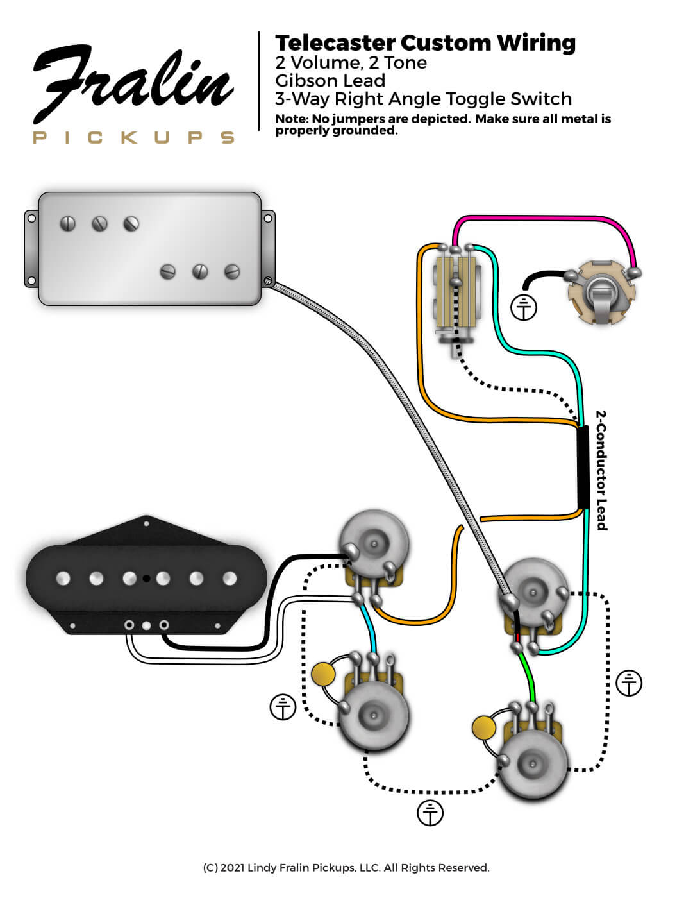
Nel mio caso sono stati scelti 4 potenziometri da 250kΩ e condensatori da 0.022μF (22 nF) non polarizzati. I cavi dei pickup sono schermati a 4 conduttori.
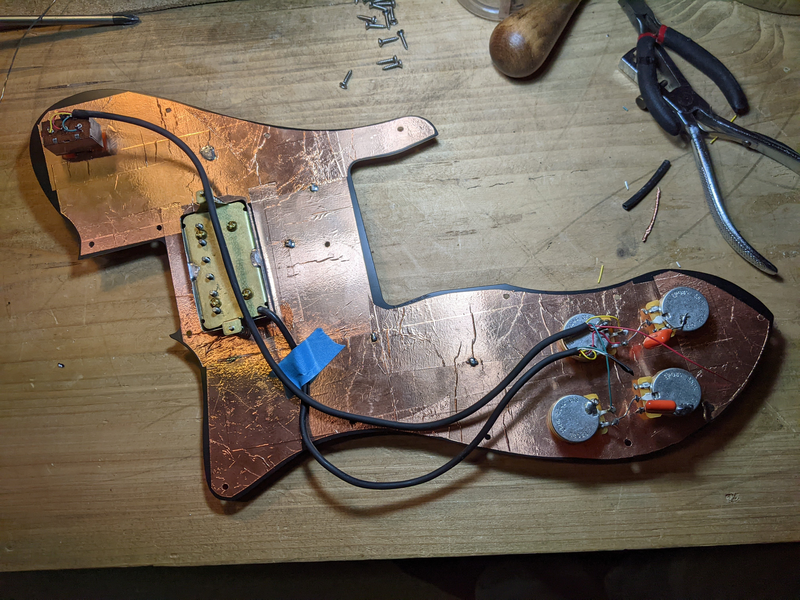
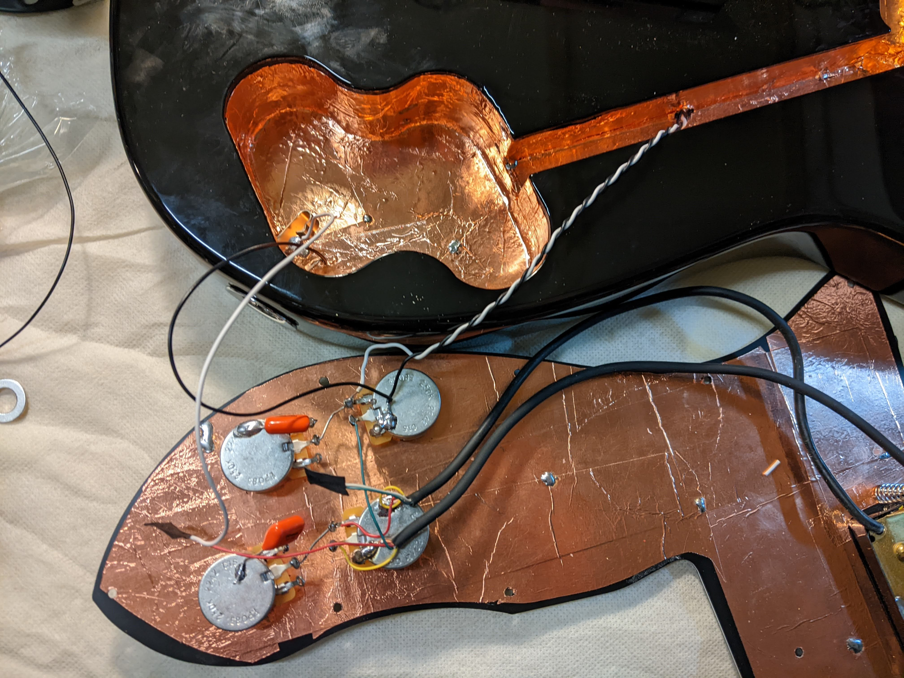
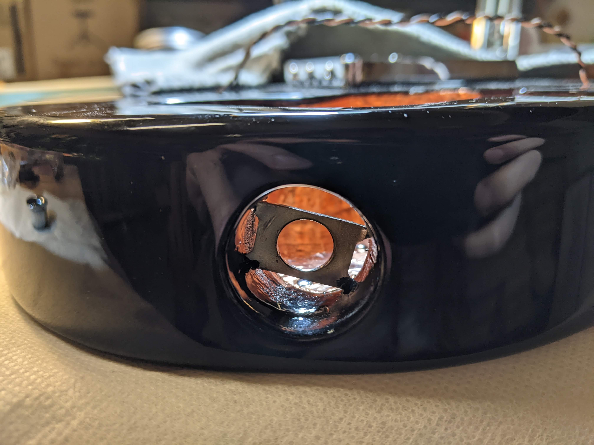
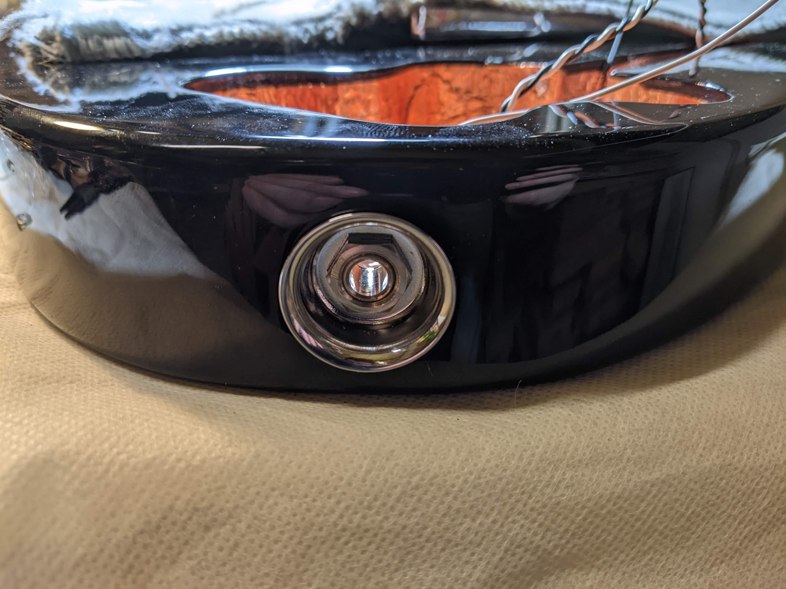
Interessante è l’installazione dell’asola che alloggia il connettore jack mono. Nel caso dei modelli vintage con la presa jack a scodella bisogna ammorsare l’asola in metallo (Figure 2 (c)) con una dima fatta con una bullone lungo e un paio di dadi e controdadi: la torsione del bullone fa muovere l’asola che si va progressivamente ad ammorsare nella cavità del body. Il jack a scodella rimane una soluzione elegante e senza viti a vista.
Limatura del capotasto
La limatura dei canali delle corde al capotasto viene fatta con delle lime speciali (piuttosto costose) in grado di produrre un fondo curvo che avvolge la corda. Tuttavia fanno parte delle attrezzatura indispensabili per la liuteria. Le dimensioni dei solchi nel capotasto dipendono essenzialmente dal set di corde che si vuole utilizzare. Nel mio caso ho optato per delle 10-46, per cui le lime usate sono le seguenti
StewMac #4541: Mi cantino (0.012’‘), Si (0.020’’)
StewMac #4542: Sol (0.026’’)
StewMac #4543: Re (0.036”), La (0.042”)
StewMac #4543: Mi basso (0.050”)
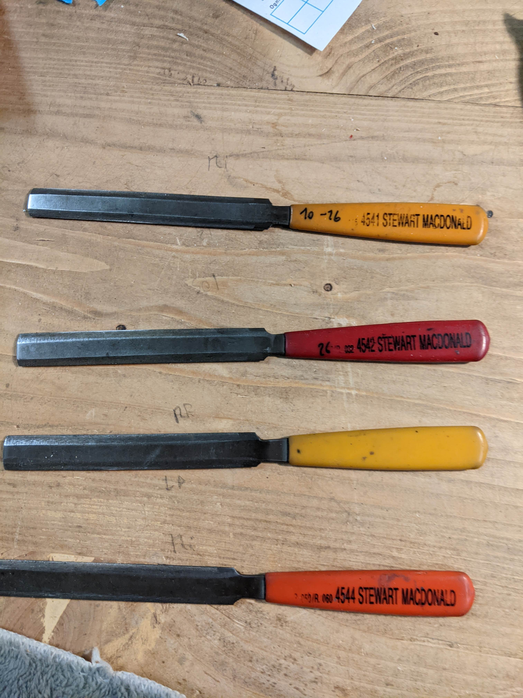
Lime per capotasto
Si procede innanzitutto alla tracciatura sul capotasto della spaziatura delle corde. Poi si fanno dei piccoli solchi iniziali in modo da tenere le corde in tensione ferme nella loro sede. Si mettono quindi su le corde e le si portano in tensione alla nota di riferimento. Si inizia a lavorare con la lima un tasto alla volta spostando la corda di lato. Quindi si procede controllando spesso l’altezza e di volta in volta si accorda alla nota di riferimento della corda. Le passate con la lima devono seguire un andamento curvilineo inclinato verso la paletta in modo da accompagnare il percorso delle corde verso le meccaniche. Una action corretta prevede un’altezza di riferimento della base della corda al primo tasto di 0.5 mm.
Lavorazioni finali e test
Le ultimissime lavorazioni sono:
test dei pickup. Una volta completato lo schema elettrico si testano i pickup collegando la chitarra all’amplificatore, e con un cacciavite si toccano le punte dei magneti, l’ampli emette un rumore. In questa fase si verificano anche ronzii e rumori.
intonazione e altezza del ponte. Sono le regolazioni più importanti fatte alle sellette del ponte che determinano l’action della chitarra.
inserimento a pressione delle boccole nella parte posteriore. Aiutandosi con un blocchetto di legno e un martello di gomma, una alla volta sono inserite a pressione le boccole. Questa operazione va fatta prima della limatura del capotasto.
inserimento di tutte le viti del battipenna. Si strofina della cera d’api sulla vite in modo da non danneggiare il legno e facilitare l’avvitamento.
tendicorda alla paletta.
viti per la tracolla con straplock (comodissimo).
strimpellata liberatoria! anche senza ampli, a secco, va bene lo stesso.
Conclusioni
È stata una maratona! Ci sono voluti 18 mesi, impiegando 3 ore effettive a settimana, per arrivare alla fine. Avevi totalmente sottostimato i tempi morti, specialmente in fase di verniciatura. Ne è valsa la pena? Certamente sì! Alla fine è una gran soddisfazione vederla finita. È sicuramente un oggetto che mi accompagnerà tutta la vita, e mi ricorderà questi momenti di gioia e dolore.
Ma…. alla fine, suona? Suona molto bene, grazie soprattutto agli ottimi pickup di Marco, ha un sustain infinito, indice di ottima qualità del legno e delle vernici, una action non bassissima, direi giusta, ma ottima per i puliti, che è poi quello che si richiedeva a questo modello, una impugnatura solida e confortevole.
Questa serie finisce qua, ho in cantiere altre costruzioni di chitarre, pedali e altre robe che spero di riuscire a documentare, anche se sicuramente non così nel dettaglio (18 mesi sono stati una concessione di I. unica e non ripetibile). Saluto infine il mio unico lettore, Pietro, grazie.